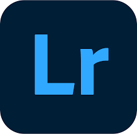

tecnologias



Sou Isaque, e minha paixão é mostrar o melhor do mundo automotivo através de fotos. Com uma visão cuidadosa e técnica, quero que cada cliente tenha uma experiência visual que realmente marque. Tenho prática com editores de vídeo e foto, em app web, o que me ajuda a dar atenção a cada detalhe, fazendo com que cada projeto revele a verdadeira essência e o impacto dos veículos.
Essas são algumas imagens dos meus projetos em eventos automotivos realizados em diversas cidades. Cada captura a energia única de cada evento, destacando a beleza e a personalidade dos carros e suas performances em diferentes cenários.